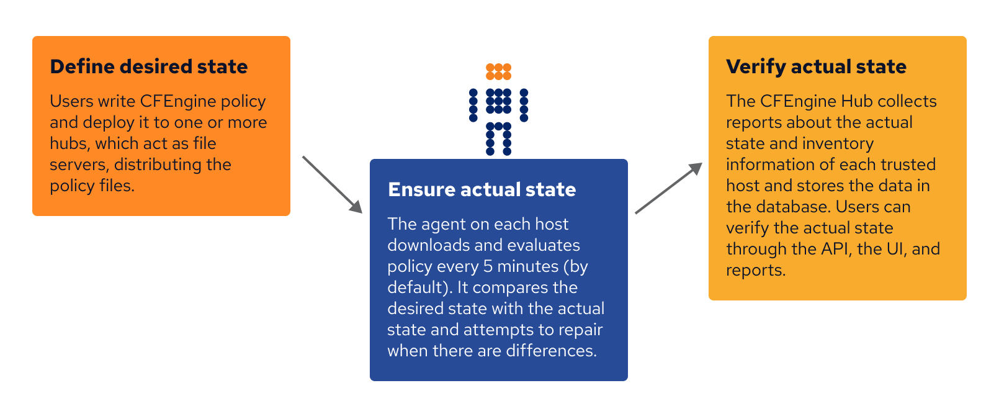
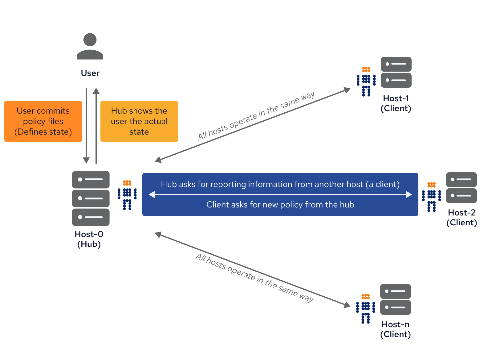

How CFEngine works
CFEngine is a fully distributed system that allows you to define desired states
of everything from very large-scale infrastructures to small devices. The
lightweight C-based cf-agent runs locally on each resource and persistently
tries to converge towards the defined desired state. The actual states of
managed resources are available in logs and an enterprise database for
compliance and easy reporting. Using CFEngine, can be described in the following
3 simple steps.
1. Define desired state
As an end-user you can use the CFEngine Domain Specific Language (DSL) to define desired states. CFEngine allows you to define a variety of states ranging from process management to software deployment and file integrity. You can check out CFEngine Promise types to get an idea of the most common states you can define.
Normally, all desired states are stored in .cf text-files in the
/var/cfengine/masterfiles directory on one or more central distribution points,
referred to as CFEngine Policy Hubs.
2. Ensure actual state
CFEngine typically runs locally on each managed resource. A resource can be anything from a server, network switch, raspberry pi, or any other computational device. CF-agent, the execution engine, is autonomous which means all the evaluations occur on the local node.
Before each run, which by default is every 5 minutes, the agent tries to connect
to one of the Policy Hubs to check if there has been any policy updates. Upon
policy updates, cf-agent will download the latest policy to its own
/var/cfengine/inputs directory, run a syntax check and upon success start to
execute.
3. Verify actual state
Whenever the agent runs, it creates a log of local inventory, system states and
execution results. The logs are stored in /var/cfengine/outputs. For enterprise
customers, all data is also stored in a local database. CFEngine also stores a
large number of asset information like software installed, CPU, memory, disk,
network activity, etc. As for execution results, CFEngine can have 3 states:
Promise Kept: Actual state was equal to Desired State
Promise Repaired: Actual state was not equal to Desired State, but the agent was able to repair the state into compliance
Promise not Kept: Actual state was not equal to Desired state and the agent was not able to restore into compliance
Graphical illustration of CFEngine process

End-user and CFEngine agents workflow

Thanks to the autonomous nature of CFEngine, systems will be continuously maintained even if the Server is down. CFEngine agents on the hosts will opportunistically try to connect to the server. If it fails, last successful policy will apply, and since all evaluation is local, it doesn't matter if the characteristics of the host changes and needs to be reconfigured. CFEngine will figure it out and ensure compliance. CFEngine has been reported to run on many different platforms in many different environments including traditional servers, workstations and laptops, network gear (routers/switches), bus and tram systems, point of sales systems, smart displays/signs, and even submarines.
Adopting CFEngine
What does adoption involve?
CFEngine is a framework and a methodology with far reaching implications for the way you do IT management. The CFEngine approach asks you to think in terms of promises and cooperation between parts; it automates repair and maintenance processes and provides simple integrated Knowledge Management.
To use CFEngine effectively, you should spend a little time learning about the approach to management, as this will save you a lot of time and effort in the long run.
The Mission plan
At CFEngine, we refer to the management of your datacentre as The Mission. The diagram below shows the main steps in preparing mission control. Some training is recommended, and as much planning as you can manage in advance. Once a mission is underway, you should expect to work by making small corrections to the mission plan, rather than large risky changes.

Planning does not mean sitting around a table, or in front of a whiteboard. Successful planning is a dialogue between theory and practice. It should include test pilots and proof-of-concept implementations.
Commercial or free?
The first decision you should make is whether you will choose a route of commercial assistance or manage entirely on your own. You can choose different levels of assistance, from just training, to consulting, to commercial versions of the software that simplify certain processes and offer extended features.
At the very minimum, we recommend that you take a training course on CFEngine. Users who don't train often end up using only a fraction of the software's potential, and in a sub-optimal way. Think of this as an investment in your future.
The advantages of the commercial products include greatly simplified set up procedures, continuous monitoring and automatic knowledge integration. See the CFEngine Nova Supplement for more information.
Installation or pilot
You are free to download Community Editions of CFEngine at any time to test the software. There is a considerable amount of documentation and example policy available on the cfengine.com web-site to try some simple examples of system management.
If you intend to purchase a significant number of commercial licenses for CFEngine software, you can request a pilot process, during which a specialist will install and demonstrate the commercial edition on site.
Identifying the team
CFEngine will become a core discipline in your organization, taking you from reactive fire-fighting to proactive and strategic practices. You should invest in a team that embraces its methods. The CFEngine team will become the enabler of business agility, security, reliability and standardization.
The CFEngine team needs to have administrator or super-user access to systems, and it needs the headroom or slack to think strategically. It needs to build up processes and workflows that address quality assurance and minimize the risk of change.
All teams are important centres for knowledge, and you should provide incentives to keep the core team strong and in constant dialogue with your organization's strategic leadership. Treat your CFEngine team as a trusted partner in business.
Training and certification
Once you have tried the simplest examples using CFEngine, we recommend at least three days of in-depth training. We can also arrange more in-depth training to qualify as a CFEngine Mission Specialist.
Mission goal and knowledge management
The main aim of Knowledge Management is to learn from experience, and use the accumulated learning to improve the predictability of workflow processes. During every mission, there will be unexpected events, and an effective team will use knowledge of past and present to respond to these unpredictable changes with confidence
The goal of an IT mission is a predictable operational state that lives up to specific policy-determined promises. You need to work out what this desired state should be before you can achieve it. No one knows this exactly in advance, and most organizations will change course over time. However, with good planning and understanding of the mission, such adjustments to policy can be small and regular.
Many small changes are less risky than few large changes, and the culture of agility keeps everyone on their toes. Using CFEngine to run your mission, you will learn to work pro-actively, adjusting the system by refining the mission goal rather than reacting to unexpected events.
To work consistently and predictably, even when understaffed, requires a strategy for describing system resources, policy and state. CFEngine can help with all of these. See the Special Topics Guide on Knowledge Management.
A major component of a successful mission, is documenting intentions. What is the goal, and how does it break down into concrete, achievable states? CFEngine can help you in this process, with training and Professional Services, but you must establish a culture of commitment to the mission and learn how to express these commitments in terms of CFEngine promises.
Build, deploy, manage, audit
The four mission phases are sometimes referred to as
Build
A mission is based on decisions and resources that need to be put assembled or
builtbefore they can be applied. This is the planning phase.In CFEngine, what you build is a template of proposed promises for the machines in an organization such that, if the machines all make and keep these promises, the system will function seamlessly as planned. This is how it works in a human organization, and this is how is works for computers too.
Deploy
Deploying really means launching the policy into production. In CFEngine you simply publish your policy (in CFEngine parlance these are
promise proposals) and the machines see the new proposals and can adjust accordingly. Each machine runs an agent that is capable of keeping the system on course and maintaining it over time without further assistance.Manage
Once a decision is made, unplanned events will occur. Such incidents traditionally set off alarms and humans rush to make new transactions to repair them. Under CFEngine guidance, the autonomous agent manages the system, and humans only manage knowledge and have to deal with rare events that cannot be dealt with automatically.
Audit
CFEngine performs continuous analysis and correction, and commercial editions generate explicit reports on mission status. Users can sit back and examine these reports to check mission progress, or examine the current state in relation to the knowledge map for the mission.
CFEngine architecture and design
CFEngine operates autonomously in a network, under your guidance. While CFEngine supports anything from 1 servers to 100,000+ servers, the essence of any CFEngine deployment is the same.
CFEngine supports networks of any size, from a handful of nodes to hundreds of thousands of computers. It is built to scale. If your site is very large (many thousands of servers) you should spend some time discussing your requirements with CFEngine experts. They will know how to tune promises and configurations to your environment as scale requires you to have more infrastructure, and a potentially more complicated configuration. No matter the scale, the essence of any CFEngine deployment is the same, but with great power comes great responsibility (a.k.a. don't break things before the weekend, on the weekend, or in fact on any other day).
CFEngine was designed to enable scalable configuration management in any kind of environment, with an emphasis on supporting large, Unix-like systems that are connected via TCP/IP.
CFEngine doesn't depend on or assume the presence of reliable infrastructure. It works opportunistically in any environment, using the fewest possible resources, and it has a limited set of software dependencies. It can run anywhere and this lean approach to CFEngine's architecture makes it possible to support both traditional server-based approaches to configuration as well as more novel platforms for configuration including embedded and mobile systems.
CFEngine's design allows you to create fault-tolerant, available systems which are independent of external requirements. CFEngine works in all the places you think it should, and all the new places you haven't even thought of yet.
Managing expectations with promises
CFEngine works on a simple notion of promises. A promise is the documentation of an intention to act or behave in some manner. When you make a promise, it is an effort to improve trust. Trust is an economic time-saver. If you can't trust you have to verify everything, and that is expensive.
Everything in CFEngine can be thought of as a promise to be kept by different
resources in the system. In a system that delivers a web site with Apache
httpd, an important promise may be to make sure that the httpd or apache package is installed,
running, and accessible on port 80. In a system which needs to satisfy mid-day
traffic on a busy web site, a promise may be to ensure that there are 200
application servers running during normal business hours.
These promises are not top-down directives for a central authority to push through the system. A large organization can't run on top-down authority alone. A group of people can't be managed without empowering and trusting them to make independent decisions.
CFEngine is a system that emphasizes the promises a client makes to the overall CFEngine network. They are the rules which clients are responsible for implementing. We can create large systems of scale because we don't create a bulky centralized authority. There should be no single point-of-failure when managing machines and people.
Combining promises with patterns to describe where and when promises should apply is what CFEngine is all about.
Automation with CFEngine
Users are good at researching solutions and making design decisions, but awful at repeated execution. Machines are pitiful at making decisions, but very good at reliable implementation at very large scale. It makes sense to let each side do the job that they are good at. With CFEngine, users make decisions and write promises for machines to implement and satisfy.
A CFEngine user will declare a promise in CFEngine, and CFEngine will then translate this promise into a series of actions to implement. For the most part, CFEngine understands how to deliver on promises, and they don't need to be given explicit instructions for completing tasks. It is your job to make decisions about the systems you are managing and to describe those in suitable promises. It is CFEngine's job to automate and deliver a promise.
CFEngine is a distributed solution that is completely independent of host operating systems, network topology or system processes. You describe the ideal state of a given system by creating promises and the CFEngine agents ensures that the necessary steps are taken to achieve this state. Automation in CFEngine is executed through a series of components that run locally on hosts.
Phases of system management
There are four commonly cited phases in managing systems with CFEngine: Build, Deploy, Manage, and Audit.
Build
A system is based on a number of decisions and resources that need to be
built before they can be implemented. You don't need to decide every detail,
just enough to build trust and predictability into your system. In CFEngine,
what you build is a template of proposed promises for the machines being
managed. If the machines in a system all make and keep these promises, the
system will function seamlessly as planned.
Deploy
Deploying really means implementing the policy that was already decided. In
transaction systems, one tries to push out changes one-by-one, hence
deploying the decision. In CFEngine you simply publish your policy (in
CFEngine parlance these are "promise proposals") and the machines see the new
proposals and can adjust accordingly. Each machine runs an agent that is
capable of implementing policies and maintaining them over time without
further assistance.
Manage
Once a decision is made, unplanned events will occur. Such incidents traditionally set off alarms and humans rush to make new transactions to repair them. In CFEngine, the autonomous agent manages the system, and you only have to deal with rare events that cannot be dealt with automatically. This is the key difference of CFEngine, a focus on autonomy and creating agents that are smart enough to adapt to changing situations.
Audit
In traditional configuration systems, the outcome is far from clear after a one-shot transaction, so one audits the system to determine what actually happened. In CFEngine, changes are not just initiated once, but locally audited and maintained. Decision outcomes are assured by design in CFEngine and maintained automatically, so the main worry is managing conflicting. Users can sit back and examine regular reports of compliance generated by the agents, without having to arrange for new transactions to roll-out changes.
You should not think of CFEngine as a roll-out system, i.e. one that attempts to force out absolute changes and perhaps reverse them in case of error. Roll-out and roll-back are theoretically flawed concepts that only sometimes work in practice. With CFEngine, you publish a sequence of policy revisions, always moving forward (because like it or not, time only goes in one direction). All of the desired-state changes are managed locally by each individual host, and continuously repaired to ensure on-going compliance with policy.
See also: Client server communication
 Mailing list
Mailing list